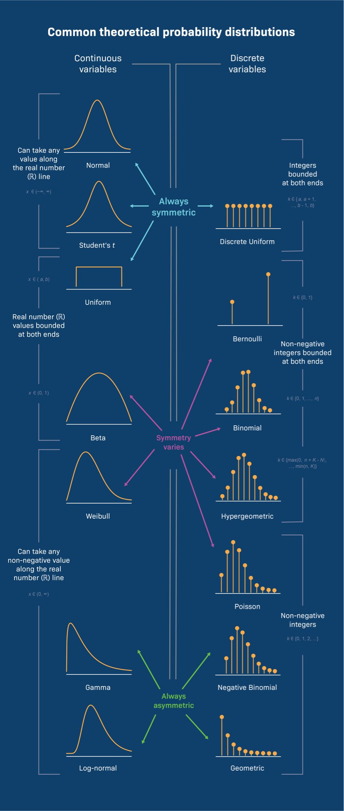

6 Regressions
Statistical modeling is a bit counter-intuitive, so it makes sense to talk a bit about what we’re trying to accomplish.
Lets first start with why - what is it that regressions accomplish? Then, we’ll discuss the “model” part of regression model - which implies that (much like with statistical tests) there are decisions about how one represents the data that influence the results we’ll get. We’ll end with some practical advice, though there’s obviously a huge corpus of content we can barely scratch the surface of.
6.1 What use are regression models?
You can do a few things with a regression model, and it helps to be clear about what you’re aiming for.
- You can use regressions to make predictions (e.g. using a linear regression to predict the FEV1 by age, sex, and height)
- You can summarize the association between two variables after “adjusting” for the effect of other variables in the model (e.g. the effect of changing a treatment indicator from 0 to 1, correcting for other observed covariates)
6.1.1 When do you (not) want a corrected estimate?
To answer this question, we need to differentiate a couple of related terms that describe the way that an Exposure (E) -> Outcome (O) relationship can be distored by a third variable. To explain this, we’ll use Directed Acyclic Graphs, which can be created with tools like Dagitty.
The idea is that you draw the causal connections between variables to define how you think they are related. It’s helpful for our purposes because it can define the different ways that three variables may interrelate.
6.1.1.1 Confounder (C)
As mentioned earlier, a confounder is something that influences both the likelihood of exposure and the likelihood of the outcome via other mechanisms than through the exposure.
For example, consider the risk of death in patients with elevated PaCO2 levels. Say that older patients are more likely to get hypercapnia. In an unadjusted analysis, PaCO2 levels might be associated with death because age is associated with likelihood of hypercapnia, and likelihood of death via a variety of mechanisms. In this case, what we’d really like to do is evaluate whether PaCO2 levels remain associated with the risk of death after controlling for age (a confounder).
[ ] DAG.
6.1.1.2 Mediator (M)
Another way
(cover this here? or elsewhere)
6.1.1.3 Effect Modifier
Effect modifiers (and the related concept of interactions) refer to situations where a third variable influences the effect of the exposure on the outcome. As a hypothetical example, a bacterial pathogen is presumably an effect modifier for response to antibiotics on community acquired pneumonia: if bacterial CAP, antibiotics help, and if viral it probably doesn’t.
This might seem like a very distinct concept from mediators and confounders - and it is. But the reason I bring it up here is that it’ll appear similar in regression analyses if not specified.
6.2 Understand the logic of regression analysis
Recall, if there is an association between an ‘exposure’ and an ‘outcome’, there are 4 possible explanations
- Chance
- Confounding (some other factor influences the exposure and the outcome)
- Bias
- Or, causation (a real effect)
Randomization = takes care of some (but not all) of the other reasons for an association = can convince a skeptic. However, observational research must make arguments (based on assumptions) and they must be explicit. Randomization addresses point 2 (essentially, converts it to point 1, in that only chance confounding can occur)
For non-randomized data, you must make an argument against point 2. This is the most common use of regression.
[the methods section of your paper is the argument against point 3; pull in RECORD/STROBE recs]
There are at least 3 uses of regression models:
- Inferential Statistics: Hypothesis testing with confounding control
- Descriptive Statistics: Summarize the strength of association
- Prediction of an outcome (e.g. statistical machine learning)
Regression comes with additional assumptions:
- Independent observations (special “mixed models” can relax this)
- The form of the output variable is correct*
- The form of the predictor variables are correct
- The relationship between the predictors are properly specified.**
- Additional constraints (e.g. constant variance)
Thus the logic is: if the assumptions of the models hold in reality, then the described relationships are valid
No model is perfect, but some models are useful
- Morris moment(TM)
Output variable (aka the dependent variable, predicted variable) form determines the type of regression :
| Level of measurement of outcome variable | Two Independent Groups without Confounding Adjustment | Two Independent Groups without Confounding Adjustment |
| Dichotomous | Chi2 Test | logistic regression |
| Unordered categorical | Chi2 Test | multinomial logistic regression |
| Ordered categorical | Wilcoxon-Mann-Whitney | ordinal logistic regression |
| Continuous (normally distributed) | T-test | linear regression |
| Censored: time to event | Log-rank test | Cox regression |
From: From: Stoddard GJ. Biostatistics and Epidemiology Using Stata: A Course Manual. Salt Lake City, UT: University of Utah School of Medicine.
Interpretation:
Regression coefficient = What change in the outcome do you expected if you change the predictor by 1 unit, holding all other variables constant
- For linear regression: additive change in outcome
- For logistic regression: multiplicative change in odds of the outcome
- For Cox regression: multiplicative change in the hazard of the outcome.
Example:
Consider, if we want to test whether ‘splenectomy’ and ‘got_cteph?’ are associated, we could use a chi2 test:
Alternatively you could specify a logistic regression
(“GLM” standards for ‘general linear model’. Logistic regression is a type of glm where the family is binomial)

(https://www.dagitty.net/dags.html Daggity is a tool to specify such diagrams)

Consider: do you want the adjusted or the unadjusted estimate?
Hint: it depends….
Distributions:

Regressions -
[ ] create the linear regression interpretation and example.
logic of different choices… ie. “under the following assumptions this is the estimate” - thus, if you make different assumptions, you make a different answers. Therefore, knowing the assumptinos are very important for knowing whether the result is believable.
Models - you choose a way to distill the relationships that are contingent on certain assumptions - and if those assumptions hold, your conclusions follow.
DAGs What does it mean to control? https://idlhy0218.github.io/page%20building/blog.html#control
Conceptually - you are modeling something… all models are wrong, some models are useful. You just need to know the assumptions you are implying by your choice, so that you can make an argument about whether the assumptions are warranted or not .
Functional forms *** dichotomization vs flexible models
What type of questions can regression be used? - controlling for the effect of one thing on another. - prediction
— how to do in python: python resources for how to do that section of it: https://ajthurston.com/predprobs?utm_source=substack&utm_medium=email